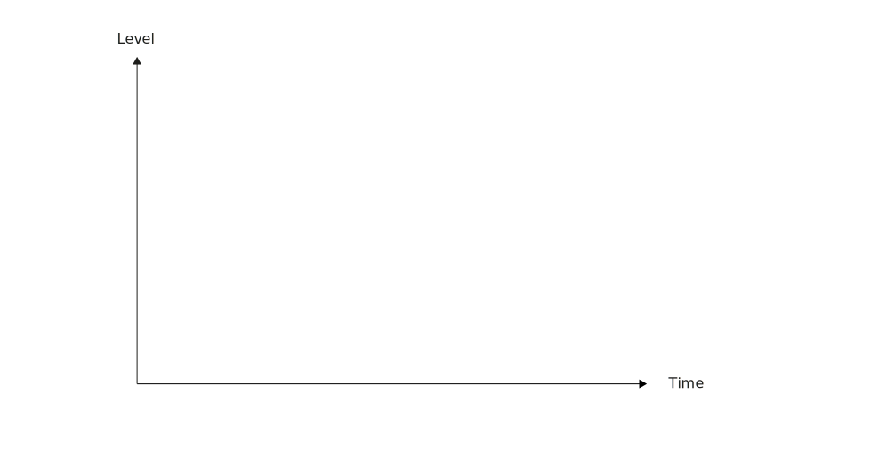
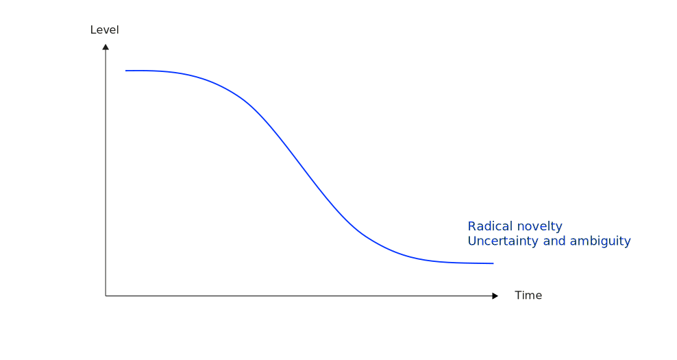
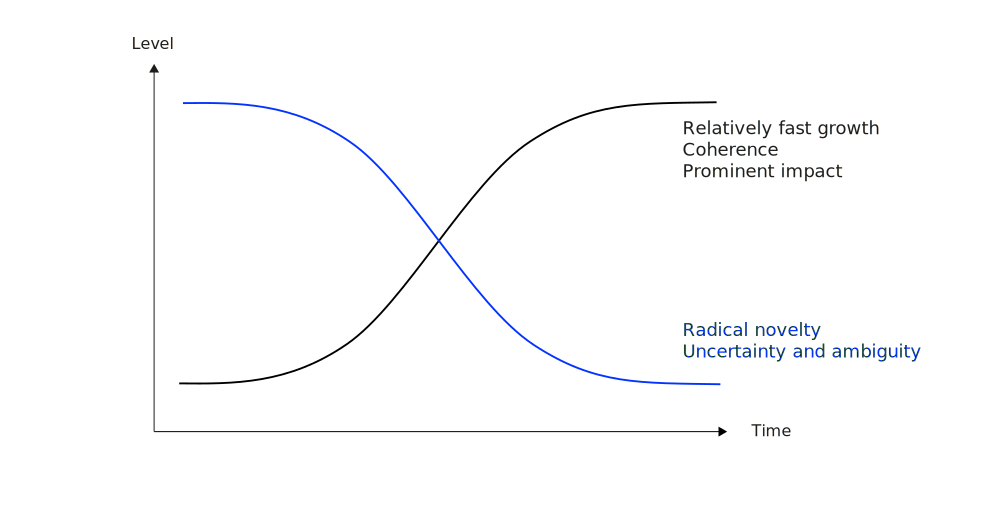
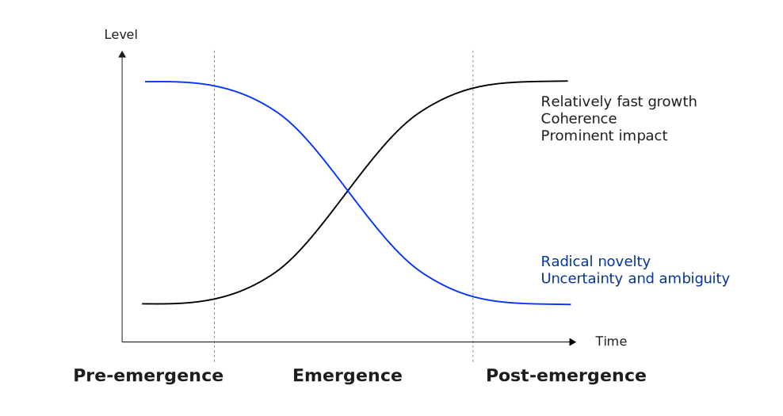
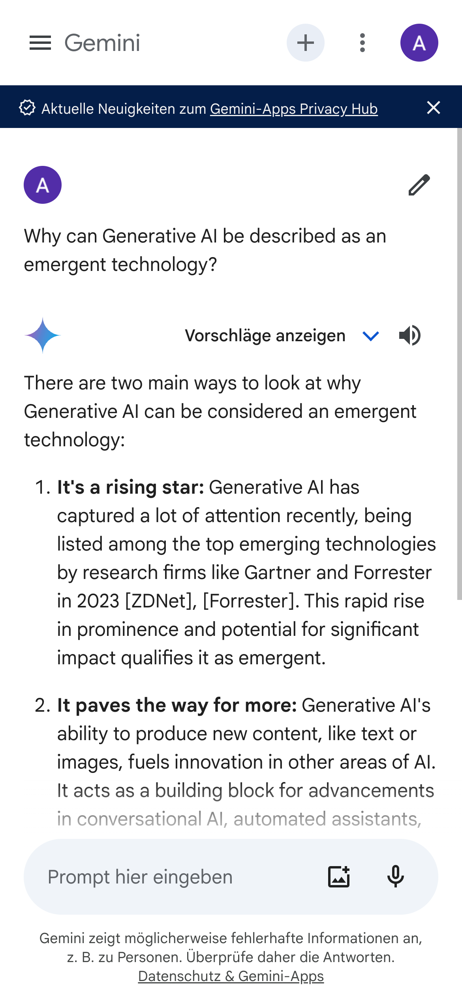
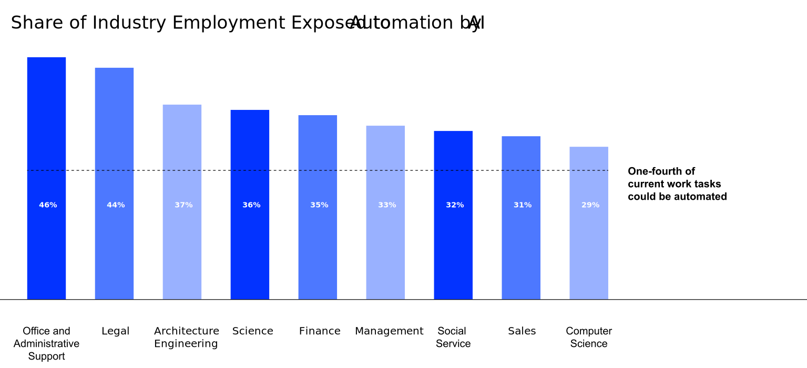

Introduction
Future Technologies & Media (FTM)
Neu-Ulm University of Applied Sciences
March 15, 2024
Learning Goals
After this lecture you should have an enhanced understanding of
- what emerging technologies are,
- what key attributes define them,
- how emergence unfolds over certain stages,
- how AI and, particularly, generative AI is linked to emerging technologies,
- how genAI impacts the economy, and
- why emerging technologies (particularly GenAI) call for trust and safety engineering.
Emerging technologies
More than just future
The term future technology refers to technology that currently exists only as a concept or in the very early stages of development. It’s what we imagine might be possible in the years or decades to come.
In this lecture, we focus on emerging technologies.
Technologies that are already under development or in their early stages of adoption and have to potential to significantly alter the status quo.
Hype Cycle
Working hypothesis
Emergent technologies are new technologies that spark large scale societal change and that open up completely new paths in certain fields.
Emergence
Emergence refers to “the process of coming into being or of becoming important and prominent” (Stevenson and Lindberg 2010).
Other definitions:
- “to rise up or come forth […] to become evident […] to come into existence” (Company 2005)
- “the process of coming into being, or of becoming important and prominent” (Merriam-Webster’s Collegiate Dictionary: Eleventh Edition 2004)
The primary attribute of emergence is ‘becoming’ — that is, coming into existence. Rotolo, Hicks, and Martin (2015, 1829)
Discussion
What characterizes emerging technology?
Characteristics
Rotolo, Hicks, and Martin (2015) outlines five attributes that classify emerging technologies and differentiate them from other technologies:
- Radical novelty
- Relatively fast growth
- Coherence
- Prominent impact
- Uncertainty and ambiguity
Radical novelity
Not there before or not used before in a given context.
Radical novel technologies
- fulfill a given function by using a different basic principle as compared to what was used before to achieve the same or a similar function (Rotolo, Hicks, and Martin 2015) or
- transfer existing technologies from one domain to another, so they introduce existing technologies to new contexts (Devezas 2005)
Relatively fast growth
Expansion rate exceeds that of established technologies.
Emerging technologies show relatively fast growth rates compared to other technologies (Rotolo, Hicks, and Martin 2015), e.g. manifested in
- the amount of funding from public and private sources,
- the volume of knowledge output, and
- number of newly developed prototypes, products and services.
Coherence
Emerging technologies have acquired a certain identity.
Coherence fuels expansion and application (Rotolo, Hicks, and Martin 2015) and is, for instance, signaled by
- terminological maturity1,
- emerging scientific communication, and
- existing of expert communities.
Prominent impact
Emerging technologies can completely change work, life and society.
Emerging technologies exert a prominent impact on the socio-economic system by
- changing the composition of actors, institutions, patterns of interactions among those,
- and the associated (knowledge) production processes (Rotolo, Hicks, and Martin 2015).
They impact a wide range of sectors, give rise to entirely new industries, or fundamentally change existing industries (Hung and Chu 2006).
Uncertainty and ambiguity
We are not sure exactly what will happen.
Emerging technologies are characterized by uncertainty in their possible outcomes and uses as well as by ambiguity in the meanings the will be ascribed to the technology (Rotolo, Hicks, and Martin 2015).
- The types of use can be intended or unintended
- The outcomes can be desired or undesired
- Social groups will associate different meanings with the technology
- There is only incomplete knowledge possible outcomes of emergence
Definition
An emerging technology “is a radically novel and relatively fast growing technology characterized by a certain degree of coherence persisting over time and with the potential to exert a considerable impact on the socio economic domain(s) which is observed in terms of the composition of actors, institutions and patterns of interactions among those, along with the associated knowledge production processes. Its most prominent impact, however, lies in the future and so in the emergence phase is still somewhat uncertain and ambiguous” (Rotolo, Hicks, and Martin 2015, 1828).
Do the key attributes of emergence change over time?
Different stages of emergence




Exercise
Research examples for emergent technologies.
Make well-founded statements about the key attributes and the stage of emergence.
AI as emerging technology
Emerging?
Fiction
or future?


Indications of emergence
I believe it’s going to change the world more than anything in the history of mankind — even more than electricity. Kai-Fu Lee
The pace of progress in artificial intelligence is incredibly fast. Unless you have direct exposure to groups like Deepmind, you have no idea how fast—it is growing at a pace close to exponential. The risk of something seriously dangerous happening is in the five-year timeframe. 10 years at most. Elon Musk
Forget artificial intelligence—in the brave new world of big data, it’s artificial idiocy we should be looking out for. Tom Chatfield
But what is AI?
Artificial Intelligence refers to intelligence demonstrated by machines as opposed to natural intelligence displayed by humans or animals Russel and Norvig (2022).
AI is the science2 of making machines to
- think (though processes and reasoning) humanly and/or rationally
- and to act (behavior) humanly and/or rationally (Russel and Norvig 2022)
Towards a definition
‘AI system’ means a machine-based systems designed to operate with varying levels of autonomy and that may exhibit adaptiveness after deployment and that, for explicit or implicit objectives, infers, from the input it received, how to generate output such as content, predictions, recommendations, or decisions, that can influence physical or virtual environment (European Commission 2024).
Systems that perceive, learn, think and act human-like.
Layers of AI
Generative AI
The term generative AI refers to computational techniques that are capable of generating seemingly new, meaningful content such as text, images, or audio from training data. Feuerriegel et al. (2024, 111)
Generative AI can be thought of as a machine-learning model that is trained to create new data, rather than making a prediction about a specific dataset. A generative AI system is one that learns to generate more objects that look like the data it was trained on.
Current capabilities

Source: OpenAI Sora3
Impacts on the economoy
According to ChatGPT, Generative AI has the potential to change on different levels4.
Productivity
Innovation
Individualization
Customer Experience
She also points out that Generative AI raises questions about ethics and data protection.
Specific impacts on knowledge work
Productivity increases5 with improved quality and greater job satisfaction.
Automation effects

Exercise
Discuss if (generative) AI is an emergent technology.
Make well-founded statements about the key attributes and the stage of emergence.
Research for specific examples in specific application fields.
Indications of emergence
AI definitely qualifies as an emergent technology.
- Radical novelty: While the underlying concepts of AI have been around for decades, its current applications are truly groundbreaking.
- Relatively fast growth: New advancements and discoveries are happening at an incredible pace, pushing the boundaries of what’s possible.
- Coherence: AI research isn’t happening in isolation. It draws on various disciplines like computer science, mathematics, linguistics, and neuroscience.
- Prominent impact: AI is transforming industries and shaping the future in a significant way. Its influence is felt in healthcare, finance, entertainment, and countless other sectors.
- Uncertainty and ambiguity: The full potential and limitations of AI are still being explored as well as the manifold ethical concerns.
Trust and safety
Introduction
The concept trust and safety (T&S) refers to the policies, practices, products and teams dedicated to ensuring that users can trust and feel safe while using a (digital) service or participating in an online community (O’Neill 2012).
Emerging technologies such as generative AI are powerful, but often pose particular challenges for trust and security.
Impacts of GenAI
Deepfakes and misinformation,
increased difficulties in content moderation, privacy risks, enforced discrimination, malicious applications, etc.
Exercise
What are relevant trust and safety risks that might be facilitated by GenAI?
Examples
Online harassment & hate speech
Online harassment refers to interpersonal aggression or offensive behavior(s) that is communicated over the internet or through other electronic media (Slaughter and Newman 2022).
Hate speech is a kind of speech act that contextually elicits certain detrimental social effects that are typically focused upon subordinated groups in a status hierarchy (Hietanen and Eddebo 2023)
- 72,409 videos violated YouTube hate & abusive policy in Jan-June 2023
- 9.6 Million pieces of content violated Meta’s hate speech policy in Jul-Sep 2023
Discussion
What can be done to counter online harassment and hate speech in online media?
What role play emerging technologies?
T&S management
A balanced approach using both reactive and proactive measures is ideal for effective trust and safety management.
- Reactive measures focus on responding to incidents and problems that have already occurred.
- Proactive measures focus on identifying potential problems and taking steps to remediate them before they become incidents.
AI in T&S management
Content moderation
User authentification and verification
User safety and privacy
Exercise
What T&S measures are not well suited to be addressed by AI or automated methods?
Q&A
Literature
{kind=link}
Footnotes
Terminological maturity is manifested e.g., in standardization of technical terms, abbreviations, acronyms
From a scientific perspective, AI aims to understand the principles that enable intelligent behavior in natural or artificial systems. From an engineering perspective, AI aims to design and synthesize useful, intelligent artefacts (Poole and Mackworth 2010).
Prompt: The camera directly faces colorful buildings in burano italy. An adorable dalmation looks through a window on a building on the ground floor. Many people are walking and cycling along the canal streets in front of the buildings.
Prompt: How is Generative AI changing the economy? (GPT-3.5)
Noy and Zhang (2023) found an average increase in productivity of 35%